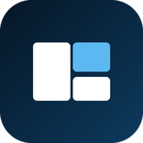
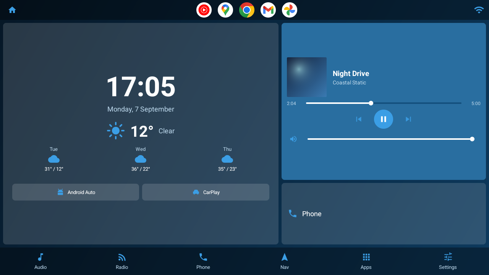
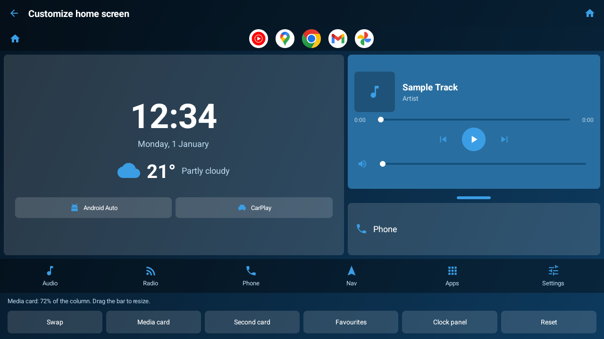
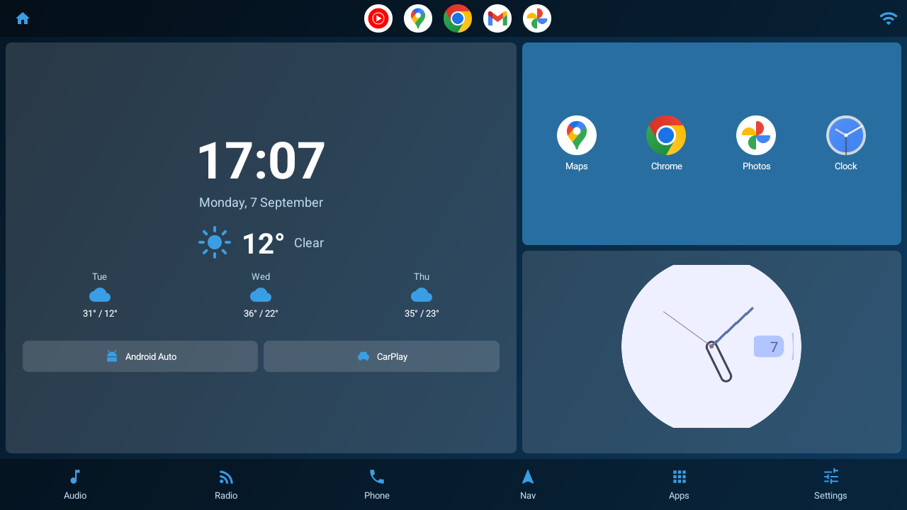
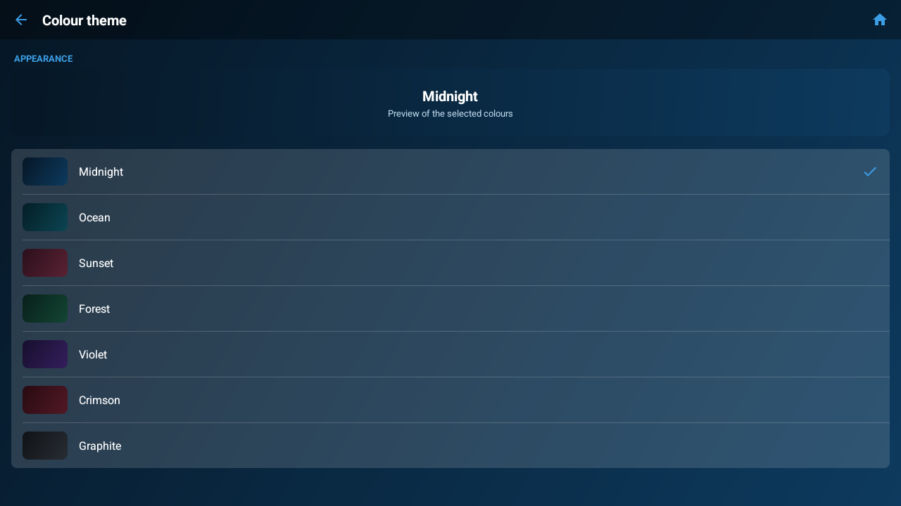
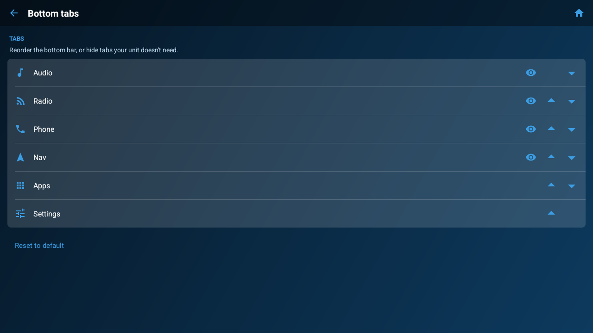
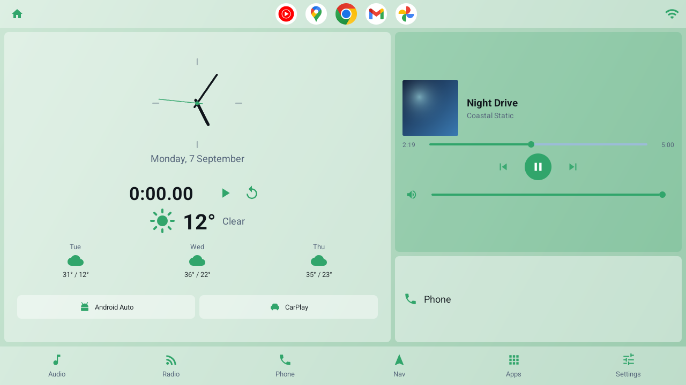

A minimal launcher for Android car head units.
Free, open source, and it works on units nobody else supports.

The whole launcher is one glanceable screen.
Most head-unit launchers are phone launchers stretched sideways. Dashline is landscape-first, readable at a glance, and light enough for a slow SoC — with a layout of its own for upright screens.
Large clock and date, current conditions and a three-day forecast. No API key, no account.
Reads whatever is playing — album art, title and artist — with play, skip and a seek bar.
Audio, Radio, Phone, Nav, Apps and Settings, each mapped to an app you choose.
Each of the two panels holds the player, a phone shortcut, your app shortcuts, or real Android widgets.
Search as you type, a frequently-used row, and long-press to hide vendor bloat.
Each recolours the whole interface. Light and dark, or automatic by time of day.
Including Turkish, Russian, Chinese and Arabic, with full right-to-left support.
The Customize screen is the real dashboard, not a mock-up. Drag the bar between the cards to resize them, swap their order, and pick what each one holds.

What you drag is what you get.
Either card can host up to three standard Android home-screen widgets — calendar, battery, music, whatever you already use — or a row of app shortcuts instead.


Seven schemes, applied across the whole UI.

Reorder the bottom bar, hide what your unit doesn't need.
Dark by default, light when you want it, or automatic by time of day. The clock can be digital, analog or minimal, with a stopwatch if you use one.

Dashline is in open beta on Google Play. Google requires 12 testers opted in for 14 days before a new app can go public — joining genuinely helps.
Use the same Google account your head unit is signed into, or the build won't appear. No Play Store on your unit? Plenty don't have one — grab the APK instead. That build runs on Android 4.4 and up.
No accounts, no analytics, no advertising, no tracking. The only outbound request is a weather lookup, and location is optional — decline it and everything else still works. The source is public, so you can check.
Install with adb install -r dashline.apk, or copy it to a USB
stick and open it with your unit's file manager.